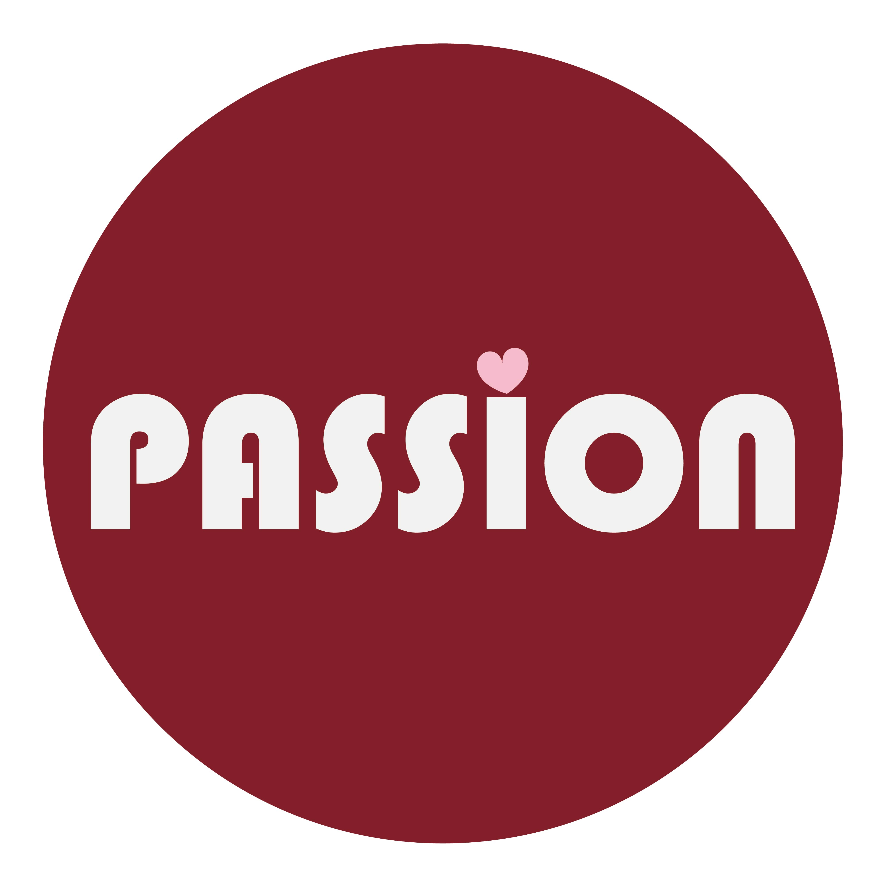

<a class="skip-link" href="#main-content">跳到主要內容</a>
<header class="site-header">
  <nav class="nav-shell" aria-label="主要導覽">
    <a class="brand" href="index.html" aria-label="PASSION 教育團隊首頁">
      
    </a>

    <button class="menu-toggle" type="button" aria-expanded="false" aria-controls="menu">
      <span class="menu-toggle-lines" aria-hidden="true"></span>
      <span class="sr-only">開啟網站選單</span>
    </button>

    <ul class="menu" id="menu">
      <li><a href="about.html">關於我們</a></li>
      <li><a href="news.html">最新消息</a></li>
      <li><a href="activity.html">活動紀實</a></li>
      <li><a href="milestones.html">團隊大事紀</a></li>
      <li><a href="outcomes-public.html">媒體報導</a></li>
      <li><a href="awards.html">獎項肯定</a></li>
      <li class="has-submenu">
        <a href="resources.html">教學資源</a>
        <ul class="submenu">
          <li><a href="resources-tests.html">診斷測驗</a></li>
          <li><a href="resources-platforms.html">教學平台</a></li>
          <li><a href="resources-materials.html">教材資源</a></li>
        </ul>
      </li>
      <li class="nav-program">
        <a href="https://passiontw.net/usr/" target="_blank" rel="noopener noreferrer">
          PASSION偏鄉優質教育學分學程
          <span aria-hidden="true">↗</span>
        </a>
      </li>
      <li class="nav-external">
        <a href="https://www.facebook.com/PASSION.Teaching.Learning/?locale=zh_TW" target="_blank" rel="noopener noreferrer">
          Facebook
          <span aria-hidden="true">↗</span>
        </a>
      </li>
    </ul>
  </nav>
</header>